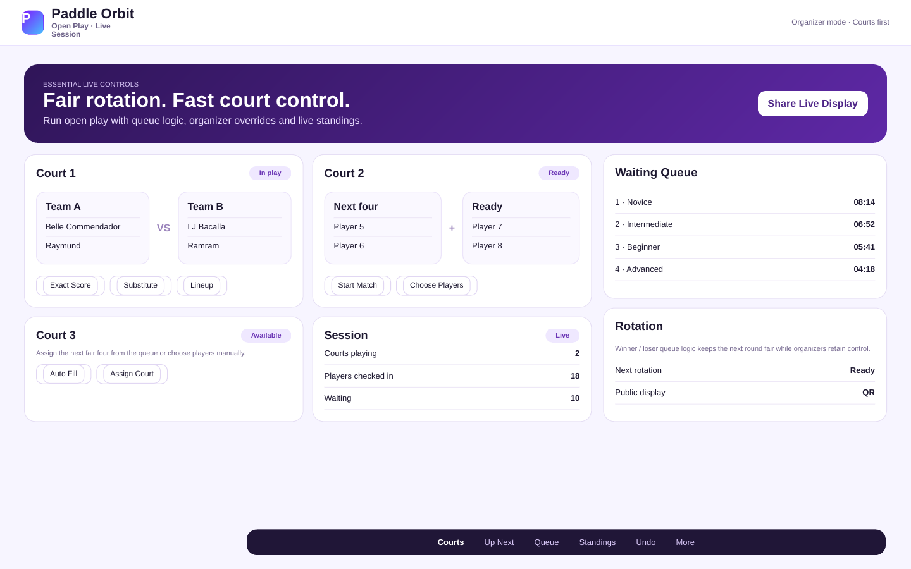
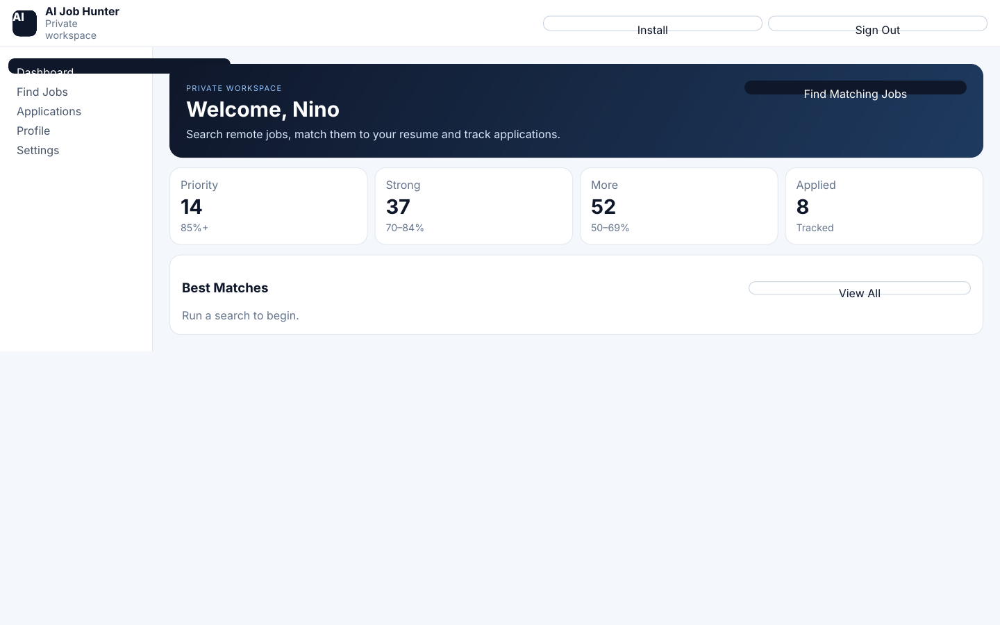
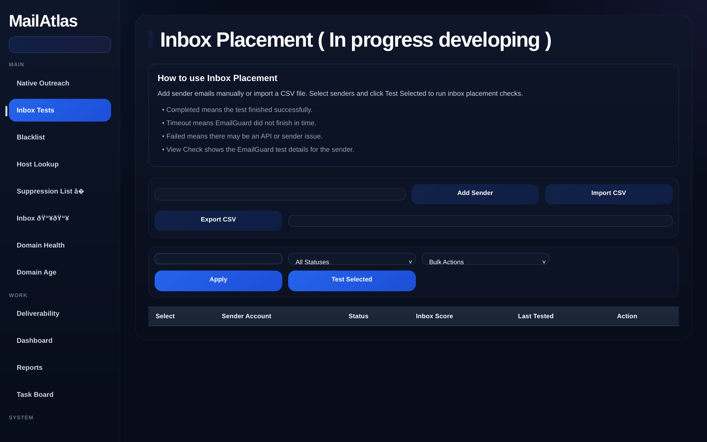

Marketing & Outreach
Cold email, email campaigns, lead generation, list building, verification, CRM workflows and reporting.
I’m Niño Anthony Vitualla — a multidisciplinary digital professional working across email marketing, cold outreach, virtual assistance, social media, graphic design, web support, e-commerce, and AI-assisted development.

I combine marketing execution, operations thinking, design sense and hands-on technology skills. That makes me especially useful to lean teams that need someone who can move from idea to execution without a long handoff chain.
Cold email, email campaigns, lead generation, list building, verification, CRM workflows and reporting.
Social content, Canva/graphic design, campaign assets and practical visual communication.
WordPress, HTML/CSS, website updates, landing pages, e-commerce support and digital QA.
No-code workflows, vibe coding, rapid prototyping and practical app/product iteration with AI tools.
Leading MailAtlas and Paddle Orbit gives me a founder/operator perspective: prioritizing what matters, balancing users with execution, coordinating growth and product decisions, and shipping improvements instead of stopping at ideas.

Product leadership and rapid iteration for a pickleball open-play management platform focused on fair rotation, organizer tools and live session workflows.

Private multi-user job matching app with resume upload, opportunity scoring, broad source coverage and application tracking.

Founder-led work across product direction, outreach operations, deliverability workflows and business growth.